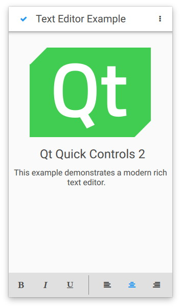

Qt Quick Controls - Text Editor
A rich-text editor app using Qt Quick Controls.
The Text Editor Example allows WYSIWYG editing of an HTML, Markdown or plain text file. The application comes with two user interfaces: one for larger screens, and a simplified UI for small touch-based devices. Both are "pure" QML. texteditor.cpp contains the main() function, which calls QFontDatabase::addApplicationFont() to add an icon font. (FontLoader would be an alternative way to achieve the same result.)
Desktop User Interface

The desktop version is a complete text editor with capabilities for formatting text, and opening and saving HTML, Markdown and plain text files.
In the model-view-control (MVC) design pattern, the control layer includes the set of operations that can be performed. In Qt Quick Controls, the Action type is used to encapsulate a single operation or command. Accordingly, we begin with a set of Action objects:
Action {
id: openAction
shortcut: StandardKey.Open
onTriggered: {
if (textArea.textDocument.modified)
discardDialog.open()
else
openDialog.open()
}
}
The Action for opening a file must first prompt the user if the existing document has been changed, to avoid losing the user's changes. Otherwise it simply opens the FileDialog which is declared further below.
The Action for saving the file is enabled only if there are changes to save:
Action {
id: saveAction
shortcut: StandardKey.Save
enabled: textArea.textDocument.modified
onTriggered: textArea.textDocument.save()
}
The Action for copying selected text is enabled only if some text is selected:
Action {
id: copyAction
shortcut: StandardKey.Copy
enabled: textArea.selectedText
onTriggered: textArea.copy()
}
Each Action to change text formatting (such as bold, italic and alignment) is checkable, and its boolean checked state is in sync with the relevant property in the selected text. Since declarative bidirectional synchronization is difficult, we use an onTriggered script to change the property when the Action is activated. The cursorSelection property is new in Qt 6.7 and makes this much easier than it was.
Action {
id: boldAction
shortcut: StandardKey.Bold
checkable: true
checked: textArea.cursorSelection.font.bold
onTriggered: textArea.cursorSelection.font = Qt.font({ bold: checked })
}
Action {
id: alignCenterAction
shortcut: "Ctrl+|"
checkable: true
checked: textArea.cursorSelection.alignment === Qt.AlignCenter
onTriggered: textArea.cursorSelection.alignment = Qt.AlignCenter
}
We have a MenuBar containing the hierarchy of Menus and MenuItems. Platform.MenuItem does not have an action property, so at minimum we need to set text and implement onTriggered.
Note: In Qt Quick Controls, each MenuItem could simply bind the relevant action. In a near-future version of Qt, Qt.labs.platform will be obsolete, and MenuBar will be suitable on every platform. Unless you need a native menu bar (only on platforms that provide one) in Qt 6.7 and older versions, you should avoid importing Qt.labs.platform. QtQuick.Controls is more portable.
Platform.MenuBar {
Platform.Menu {
title: qsTr("&File")
Platform.MenuItem {
text: qsTr("&Open")
onTriggered: openAction.trigger()
}
Platform.MenuItem {
text: qsTr("&Save…")
onTriggered: saveAction.trigger()
}
Platform.MenuItem {
text: qsTr("Save &As…")
onTriggered: saveAsAction.trigger()
}
Platform.MenuItem {
text: qsTr("&Quit")
onTriggered: quitAction.trigger()
}
}
Platform.Menu {
title: qsTr("&Edit")
Platform.MenuItem {
text: qsTr("&Copy")
enabled: copyAction.enabled
onTriggered: copyAction.trigger()
}
...
The existing Action objects are reused in the ToolBar; but here we override each Action's text property to choose a textual icon from our icon font:
header: ToolBar {
leftPadding: 8
Flow {
id: flow
width: parent.width
Row {
id: fileRow
ToolButton {
id: openButton
text: "\uF115" // icon-folder-open-empty
font.family: "fontello"
action: openAction
focusPolicy: Qt.TabFocus
}
ToolButton {
id: saveButton
text: "\uE80A" // icon-floppy-disk
font.family: "fontello"
action: saveAction
focusPolicy: Qt.TabFocus
}
ToolSeparator {
contentItem.visible: fileRow.y === editRow.y
}
}
Row {
id: editRow
ToolButton {
id: copyButton
text: "\uF0C5" // icon-docs
font.family: "fontello"
focusPolicy: Qt.TabFocus
action: copyAction
}
...
The main part of the text editor is a TextArea inside a Flickable:
Flickable {
id: flickable
flickableDirection: Flickable.VerticalFlick
anchors.fill: parent
ScrollBar.vertical: ScrollBar {}
TextArea.flickable: TextArea {
id: textArea
textFormat: Qt.RichText
wrapMode: TextArea.Wrap
focus: true
selectByMouse: true
persistentSelection: true
...
A ScrollBar is attached to the vertical axis. Since word-wrapping is enabled via wrapMode, we don't need a horizontal ScrollBar.
The TextArea.flickable attached property is used so that when the text cursor is moved out of the viewport (for example via arrow keys, or by typing a lot of text), TextArea scrolls the Flickable to keep the cursor visible.
There is a context menu; we use a TapHandler to detect a right-click and open it:
TapHandler {
acceptedButtons: Qt.RightButton
onTapped: contextMenu.open()
}
The context Menu contains MenuItems.
Platform.Menu {
id: contextMenu
Platform.MenuItem {
text: qsTr("Copy")
enabled: copyAction.enabled
onTriggered: copyAction.trigger()
}
...
We consistently use the qsTr function to enable translation of UI text, so that the application will make sense regardless of the end user's native language.
We use several kinds of dialogs:
FileDialog {
id: openDialog
fileMode: FileDialog.OpenFile
selectedNameFilter.index: 1
nameFilters: ["Text files (*.txt)", "HTML files (*.html *.htm)", "Markdown files (*.md *.markdown)"]
currentFolder: StandardPaths.writableLocation(StandardPaths.DocumentsLocation)
onAccepted: {
textArea.textDocument.modified = false // we asked earlier, if necessary
textArea.textDocument.source = selectedFile
}
}
FileDialog {
id: saveDialog
fileMode: FileDialog.SaveFile
nameFilters: openDialog.nameFilters
currentFolder: StandardPaths.writableLocation(StandardPaths.DocumentsLocation)
onAccepted: textArea.textDocument.saveAs(selectedFile)
}
FontDialog {
id: fontDialog
onAccepted: textArea.cursorSelection.font = selectedFont
}
ColorDialog {
id: colorDialog
selectedColor: "black"
onAccepted: textArea.cursorSelection.color = selectedColor
}
MessageDialog {
title: qsTr("Error")
id: errorDialog
}
MessageDialog {
id : quitDialog
title: qsTr("Quit?")
text: qsTr("The file has been modified. Quit anyway?")
buttons: MessageDialog.Yes | MessageDialog.No
onButtonClicked: function (button, role) {
if (role === MessageDialog.YesRole) {
textArea.textDocument.modified = false
Qt.quit()
}
}
}
MessageDialog {
id : discardDialog
title: qsTr("Discard changes?")
text: qsTr("The file has been modified. Open a new file anyway?")
buttons: MessageDialog.Yes | MessageDialog.No
onButtonClicked: function (button, role) {
if (role === MessageDialog.YesRole)
openDialog.open()
}
}
It's generally easier to declare separate instances for each purpose. We have two instances of FileDialog, for opening and saving files respectively. This became easier in Qt 6.7, with new features in TextDocument.
A FontDialog and a ColorDialog allow changing text formatting. (In Markdown format, there's no syntax to represent specific font and color choices; but font characteristics such as bold, italic and monospace are saved. In HTML format, all formatting is saved.)
We have a MessageDialog to show error messages, and two more for prompting the user what to do when a file has been modified.
Touch User Interface

The touch user interface is a simplified version of the text editor. It is suitable for touch devices with limited screen size. The example uses file selectors to load the appropriate user interface automatically.
Running the Example
To run the example from Qt Creator, open the Welcome mode and select the example from Examples. For more information, visit Building and Running an Example.